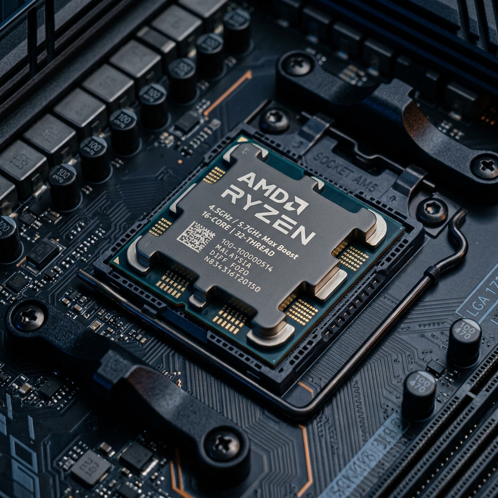

İşlemci (CPU) ve Pin Olayı Nedir?
💡 Sade Benzetme: Bilgisayarın Fabrika Müdürü
İşlemci, bilgisayardaki tüm komutları hesaplayan ana beyindir. Çekirdekler (Cores) fabrikadaki işçi sayısı, Threads (İş Parçacığı) ise bu işçilerin el sayısıdır.
📌 İşlemcilerde Pin Olayı (PGA vs LGA Farkı):
İşlemcinin anakart ile elektrik ve veri alışverişi yapabilmesi için altında yüzlerce altın iğne uç bulunur. Buna **Pin Yapısı** denir.
PGA (Pin Grid Array)
İğne pinler doğrudan işlemcinin altındadır. (Örn: AMD Ryzen 3000 / 5000 serisi - AM4 soket).
⚠️ Dikkat: İşlemciyi takarken pinler eğrilirse işlemci bozulabilir!LGA (Land Grid Array)
İşlemcinin altı düzdür, iğne pinler anakart yuvasının içindedir. (Örn: AMD AM5, Intel LGA1700).
⚠️ Dikkat: Anakart yuvasındaki pinlere el sürülmemelidir.